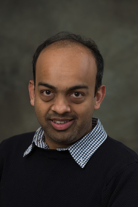

Main | CV | Research | Teaching | Awards

Professor, Electrical and Computer Engineering, University of Waterloo, Canada (2026-present)
Visiting Fellow,
Tenstorrent LLC (2026)
Associate Professor, Electrical and Computer Engineering, University of Waterloo, Canada (2020-2026)
Leave of absence, Research Director, Xilinx Labs (now AMD Research) Singapore (2022-2023)
Assistant Professor, Electrical
and Computer Engineering, University of Waterloo, Canada (2016-2020)
Chief Technology Officer, Plunify Inc (2014-2016)
Assistant Professor, School of Computer Engineering, NTU (2012-2016)
Junior Research Fellow, Imperial College London (2010-2012)
Consultant, Maxeler
Inc. (now part of Groq, whose inference technology is licensed
by NVIDIA) (2011-2012)
Ph.D., California Institute of Technology (2010)
M.S. CS, California Institute of
Technology (2006)
M.S. EE, California Institute of Technology (2005)
2026
| Date |
News |
| Sep 15 |
FPL 2026 Stamatis Vassiliadis Memorial Best Paper Award for “Cocotb-PYNQ-PR: From Co-Simulation to Deployment,
A Unified DFX Framework for PYNQ”. Certificate |
2024
| Date |
News |
| Dec 17 |
FPT 2024 Best Paper Award for “GraphNoC: Graph Neural Networks for Application-Specific FPGA NoC Performance
Prediction”. Certificate |
| Nov 1 |
One full paper was accepted to FPT 2024. |
2023
| Date |
News |
| Jul 14 |
TRETS Best Paper Award 2023 for the RapidLayout paper. Certificate |
| May 8 |
I finished my duties as Program Chair of FCCM 2023. |
| Mar 1 |
I returned to Canada. |
2022
| Date |
News |
| Jan 3 |
I began a leave of absence from Waterloo to work as Research Director at Xilinx Labs (now AMD Research) Singapore. |
2021
| Date |
News |
| May 10 |
One full paper was presented at FCCM 2021. |
2020
| Date |
News |
| Aug 14 |
I received the Waterloo EngSoc (Engineering Society) Teaching Excellence Award for Spring 2020. |
| Jul 1 |
I was promoted to Associate Professor with tenure. |
| May 19 |
Two full papers were accepted to FPL 2020. |
| May 4 |
One short paper was accepted to FCCM 2020. |
2019
| Date |
News |
| Dec 13 |
Our FPT 2019 paper won the Best Paper Award. Certificate |
| Oct 8 |
One full paper was accepted to FPT 2019 and nominated for Best Paper. |
| May 17 |
Two full papers were accepted to FPL 2019. |
| Mar 27 |
One full paper and one short paper were accepted to FCCM 2019. |
2018
| Date |
News |
| Nov 16 |
One full paper was accepted to FPGA 2019. |
| Sep 16 |
Two full papers were accepted to FPT 2018. |
| May 2 |
Our TRETS 2017 submission won the Best Paper Award. Certificate |
| Mar 13 |
One full paper was accepted to ISCA 2018. |
| Mar 5 |
Two full papers were accepted to FCCM 2018. |
2017
| Date |
News |
| Oct 15 |
I delivered a tutorial on neural networks and embedded SoCs at ESWEEK. |
| Sep 26 |
One full paper was accepted to FPT 2017. |
| Jul 25 |
I delivered an invited talk on OpenCL programming in Harbin, China. |
| Jul 12 |
Two full papers were accepted to FPL 2017. |
| Apr 3 |
One short paper was accepted to IWOCL 2017. |
| Mar 7 |
Two full papers were accepted to FCCM 2017. |
2016
| Date |
News |
| Dec 14 |
One journal article was accepted for publication in TRETS 2017. |
| Nov 20 |
One short paper was accepted to FPGA 2017. |
| Nov 11 |
One paper was accepted to DATE 2017. |
| Oct 5 |
Our CASES 2016 submission won the Best Paper Award. Certificate |
| Oct 1 |
I moved to the University of Waterloo, Canada. |
| Sep 18 |
One paper was accepted to FPT 2016. |
| Aug 25 |
One paper was accepted to ACMDev 2016. |
| Jul 16 |
Delivered a full-day invited lecture on OpenCL for CPUs, GPUs, and FPGAs at the PAPAA summer school at the University of Hong
Kong. |
| Jul 2 |
One full paper was accepted to CASES 2016. |
| Jun 20 |
Three full papers and one short paper were accepted to FPL 2016. |
| Mar 2 |
One full paper, one short paper, and two posters were accepted to FCCM 2016. |
2015
| Date |
News |
| Nov 15 |
One full paper, one short paper, and one poster were accepted to FPGA 2016. |
| Nov 2 |
One journal article was accepted by Supercomputing Frontiers. |
| Sep 17 |
One journal article was accepted by TRETS. |
| Sep 3 |
The Hoplite NoC paper, co-authored with Jan Gray, won the Michal Servit Best Paper Award at FPL 2015. Certificate, Photo. |
| Aug 10 |
I was awarded a Tier 1 grant as PI for machine learning in FPGA CAD (S$100K). |
| Aug 4 |
I was awarded a Delta Electronics grant as Co-PI, led by Arindam (S$100K Co-PI). |
| Jun 15 |
I was awarded an MIT-SMART grant as Co-PI, led by Arindam (S$60K Co-PI). |
| Jun 5 |
Two full papers and one poster were accepted to FPL 2015. |
| May 18 |
One full paper was accepted to ASAP 2015. |
| Mar 3 |
Three full papers and one poster were accepted to FCCM 2015. |
| Feb 17 |
One paper was accepted to Supercomputing Frontiers 2015 (organized by A*STAR, Singapore). |
| Feb 16 |
Two full papers were accepted to RAW 2015 (co-located with IPDPS 2015). |
2014
| Date |
News |
| Dec 15 |
I was named Technical Program Co-Chair for FPT 2015 in Queenstown, New Zealand. |
| Nov 24 |
I was awarded my third Edex (Excellence in Education) grant as PI (S$37K; Co-PI: Anupam Chattopadhyay). |
| Nov 13 |
One full paper, one short paper, and one poster were accepted to FPGA 2015. |
| Sep 19 |
Two short papers were accepted to FPT 2014. |
| Aug 1 |
One full paper was accepted to HiPC 2014 (in collaboration with NTU EOS). |
| Jul 21 |
One full paper was accepted to DFM 2014 (co-located with PACT 2014). |
| Jul 10 |
I began serving as CTO at Plunify. |
| Jun 25 |
One FPL 2014 full paper, nominated for Best Paper, and one poster were accepted. |
| Mar 13 |
Three short papers were accepted to FCCM 2014. |
| Feb 20 |
The CE4054 Hackathon was announced. |
2013
| Date |
News |
| Dec 6 |
Abid’s TPDS 2013 journal article was accepted. |
| Nov 30 |
I was awarded an AcRF Tier 1 grant as PI (S$150K). |
| Oct 28 |
I was awarded my second Edex (Excellence in Education) grant as PI (S$40K; Team: Arvind Easwaran and Iris Lee
Chai Hong). |
| Oct 2 |
One full paper was accepted to FPT 2013. |
| Aug 13 |
My PhD student Abid Rafique won the 2013 HiPEAC Paper Award for our FCCM 2013 paper. Certificate |
| Aug 8 |
My Edex (Excellence in Education) grant team completed its summer project on automated
assessment. |
| Apr 30 |
My paper was named one of the 25 most influential FCCM papers from the previous 20 years. Certificate |
| Apr 25 |
Siddhartha won a 50th DAC Richard Newton Young Student Fellow grant. |
| Apr 24 |
Dulitha joined my lab as a research staff member. |
| Mar 18 |
I was awarded a CELT Edex (Excellence in Education) grant as PI/PL (S$25K; Team: Kyle Rupnow, Iris Lee Chai Hong,
and Raphael Rubin). |
| Mar 2 |
I organized the 2013 NTU Roadmapping Workshop on the Future of Spatial Architectures. Flyer, Participants |
| Mar 2 |
Two full papers were accepted to FCCM 2013. |
2012
| Date |
News |
| Dec 17 |
I was awarded an S$50K NTU College of Engineering Seed Fund grant as PI (Co-PI: Kyle Rupnow). |
| Oct 1 |
I started as an Assistant Professor at SCE, NTU. |
Misc
Class/Group Presentations: Pointers to Talks/Slides on Useful Research Skills
Memories
Singapore Retrospective (2012-2016)
London Retrospective 2010 2011 2012
Philadelphia Retrospective 2006-2010
Pasadena Retrospective 2003-2006
{kind=link}
{kind=link}
{kind=link}
{kind=link}
{kind=link}
{kind=link}
{kind=link}
{kind=link}
{kind=link}